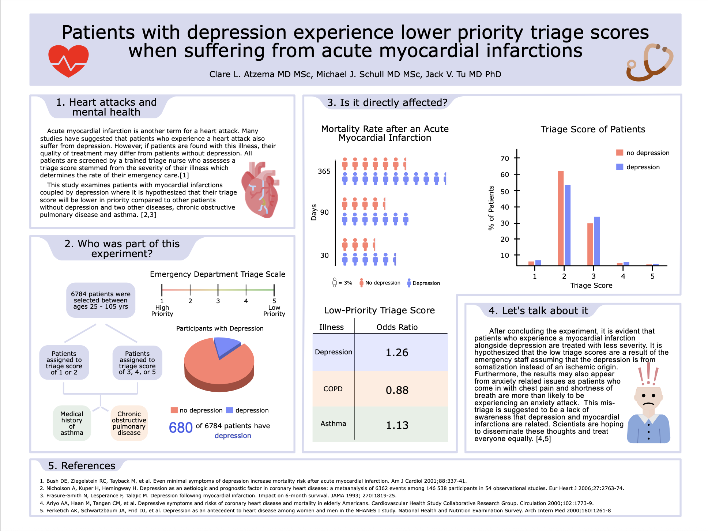

Scientific Poster: Myocardial Infarctions & Depression
❤️ Myocardial Infarctions & Depression
This project highlights a scientific poster I developed during my undergraduate studies in Health Science at the University of Toronto. It explores how acute myocardial infarction (heart attack) outcomes are affected when patients also live with depression.
This is an important question because depression isn’t just a mental health challenge — it also influences how patients are treated in emergency settings, the quality of care they receive, and ultimately, their survival rates.
The project was designed to translate complex medical findings into accessible visuals and storytelling, so that healthcare workers, patients, and the public could all understand the importance of recognizing depression as a critical factor in heart disease.
📜 Full Poster

Full scientific poster on myocardial infarctions and depression.
🔬 Background & Hypothesis
A myocardial infarction (MI) is the medical term for a heart attack, caused by a blockage of blood flow to the heart muscle. This is already a life-threatening event — but when combined with depression, patients often face worse outcomes.
Research shows that people with depression may:
- Experience heart attacks at a higher rate.
- Receive lower triage scores in emergency care (triage scores determine how quickly a patient is seen).
- Face higher risks of death following an MI.
Hypothesis:
Patients with both heart attacks and depression are more likely to be given lower emergency priority than those with other conditions (like asthma or COPD) or those without depression.
👥 Patient Selection
The study reviewed data from 6,784 patients, ranging in age from 25 to 105 years old.
Patients were divided into groups based on their triage scores:
- Scores 1–2 → High priority, immediate care needed
- Scores 3–5 → Lower priority, less urgent treatment
Within this group:
- 680 patients also had depression
- Others had asthma or chronic obstructive pulmonary disease (COPD)
This allowed researchers to compare how patients with different health backgrounds were triaged and treated during heart attacks.
📊 Key Findings
The results were clear:
- Patients with depression + MI were more likely to receive lower-priority triage scores.
- Ratios of low-priority scores:
- 1.26 for depression (higher likelihood of lower care priority)
- 0.88 for COPD
- 1.13 for asthma
This meant that depressed patients were more often seen as “less urgent” — even though their condition was just as dangerous.
🔎 Mortality Outcomes
When looking at survival rates after a heart attack, depressed patients consistently had worse results:
- 30 days → Higher risk of death
- 90 days → Risk remained higher
- 1 year → Long-term survival was significantly worse
🧠 Why Does This Happen?
The findings suggest mis-triage in emergency settings:
- Somatization assumption: Staff may believe chest pain or shortness of breath comes from anxiety or stress, not a heart attack.
- Symptom confusion: Because depression is often linked to physical complaints (like fatigue or breathlessness), real cardiac symptoms may be underestimated.
- Lack of awareness: There isn’t enough training or emphasis on how depression directly increases heart risk.
This means some patients in crisis may not get urgent treatment simply because their mental health history influences how their symptoms are interpreted.
🌍 Why It Matters
This research demonstrates that:
- Mental health directly impacts physical health outcomes.
- Emergency staff need greater awareness of depression’s role in cardiovascular disease.
- Equal treatment must be ensured — depression should never mean delayed care.
By presenting this information in a poster format, I aimed to make the science both clear and actionable — useful for medical professionals, but also approachable for non-specialist audiences.
🎯 Project Goals
- Translate scientific data into accessible communication tools
- Show how mental and physical health intersect in life-threatening conditions
- Promote better awareness of the need for equity in emergency care
- Demonstrate how visual medical communication can drive real-world impact
📚 References
- Bush DE, Ziegelstein RC, Tayback M, et al. Even minimal symptoms of depression increase mortality risk after acute myocardial infarction. Am J Cardiol. 2001;88:337-41.
- Nicholson A, Kuper H, Hemingway H. Depression as an aetiologic and prognostic factor in coronary heart disease. Eur Heart J. 2006;27:2763-74.
- Frasure-Smith N, Lesperance F, Talajic M. Depression following myocardial infarction: Impact on 6-month survival. JAMA. 1993;270:1819-25.
- Ariyo AA, Haan M, Tangen CM, et al. Depressive symptoms and risks of coronary heart disease and mortality in elderly Americans. Circulation. 2000;102:1773-9.
- Ferketich AK, Schwartzbaum JA, Frid DJ, et al. Depression as an antecedent to heart disease among women and men in the NHANES I study. Arch Intern Med. 2000;160:1261-8.